Grow With Phoenix
Rediseño en curso · 2026
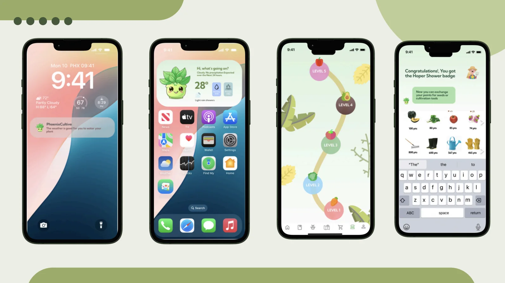
- Mi rol
- Herramientas
- Contexto
- Reconocimiento
- Equipo
- Estado
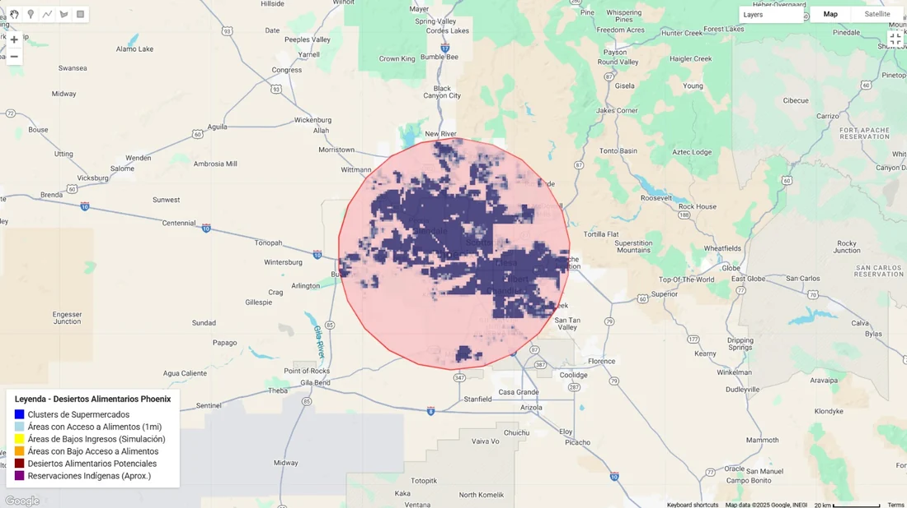
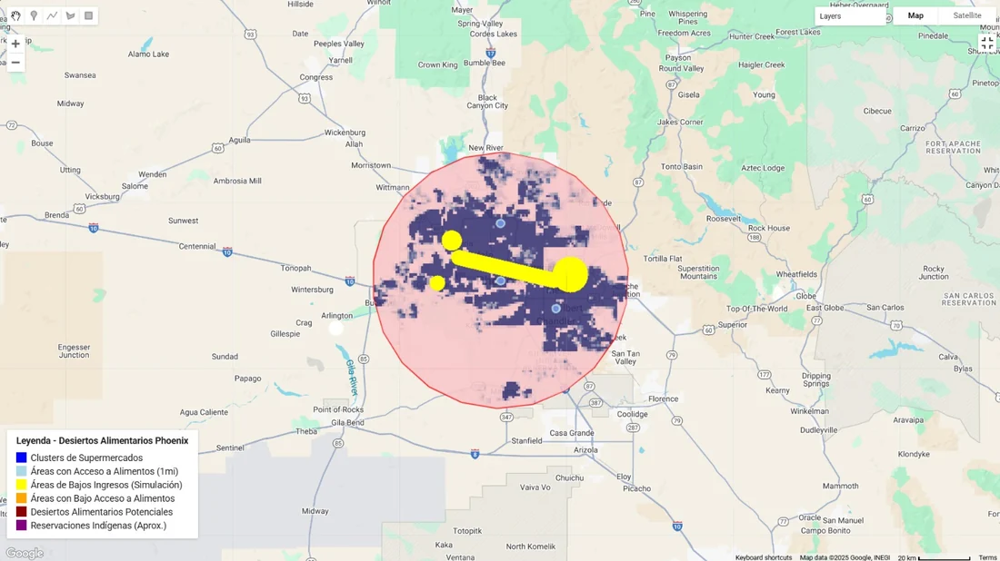
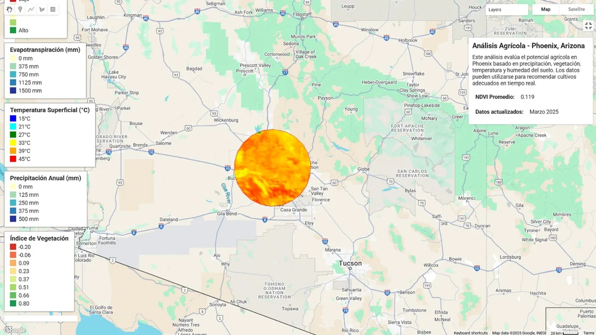
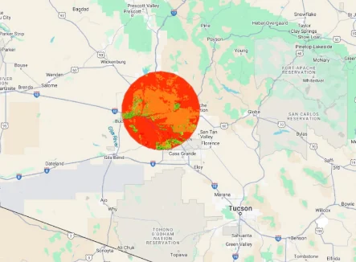
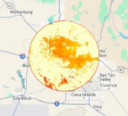
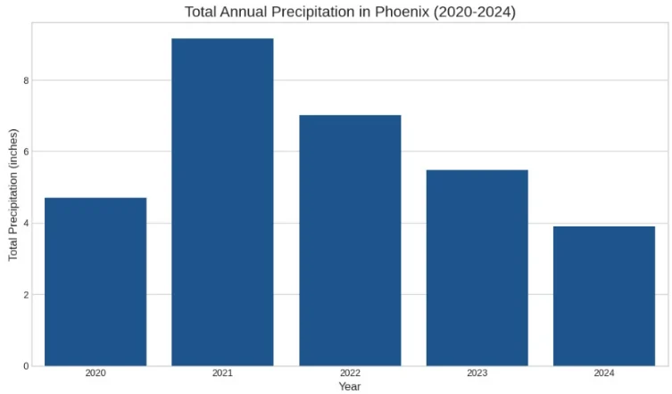
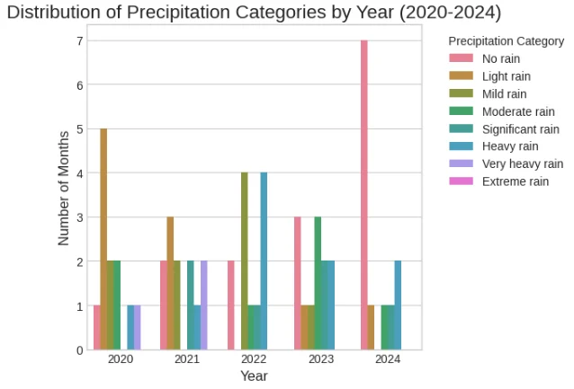
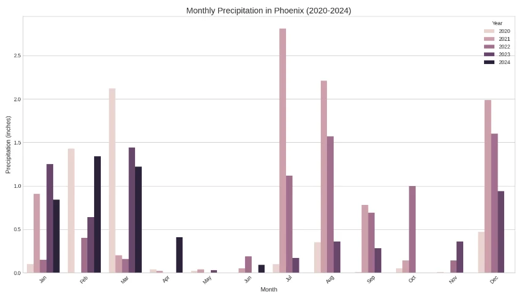
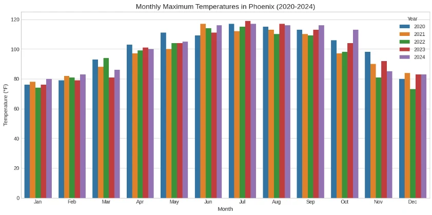
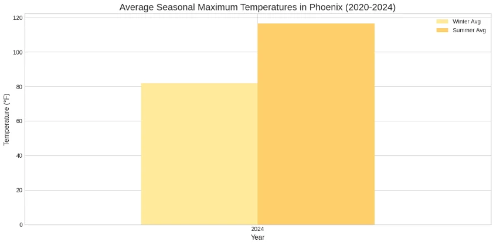
- Census · ACS TIGER/2010/Tracts_DP1
- Cobertura del suelo · NLCD USGS/NLCD_RELEASES/2019_REL/NLCD/2019
- Población · CIESIN CIESIN/GPWv411/GPW_Population_Count
- Límites administrativos TIGER/2018/Counties
- Precipitación · CHIRPS UCSB-CHG/CHIRPS/PENTAD
- Vegetación · Sentinel-2 COPERNICUS/S2_SR
- Humedad del suelo · SMAP NASA_USDA/HSL/SMAP_soil_moisture
- Cultivos · USDA NASS USDA/NASS/CDL
- Temperatura · MODIS MODIS/061/MOD11A2
- Evapotranspiración · MODIS MODIS/006/MOD16A2
Discover
Grow
Cook
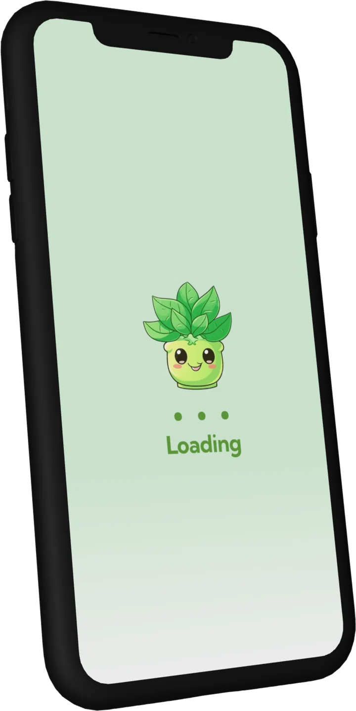
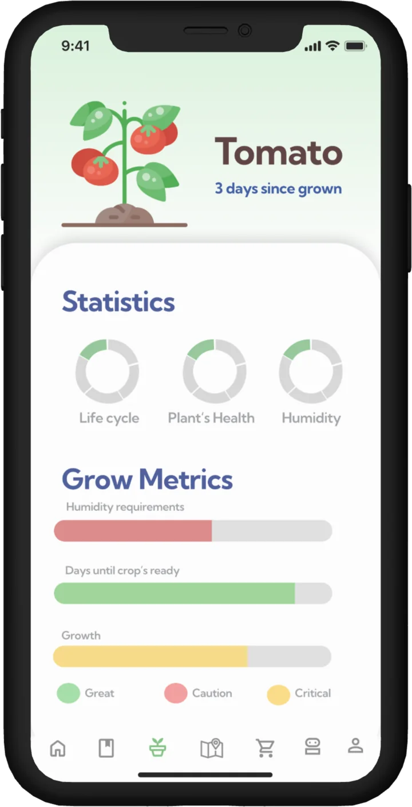
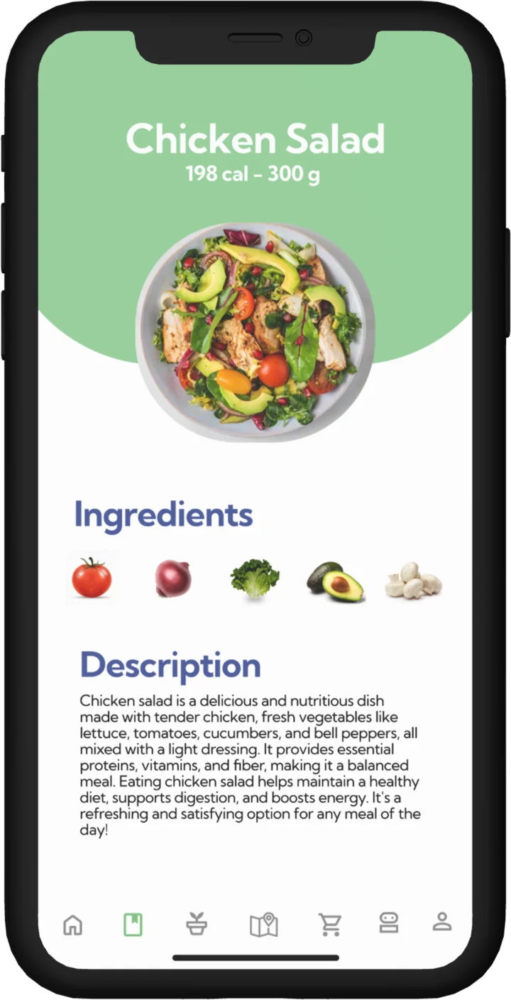
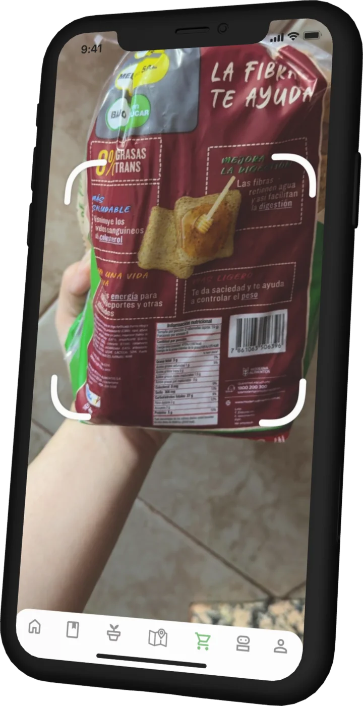
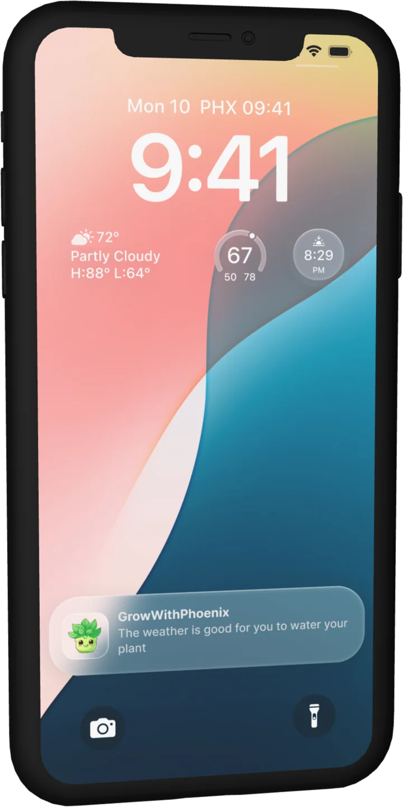
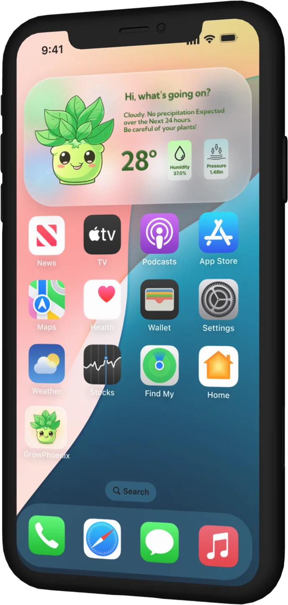